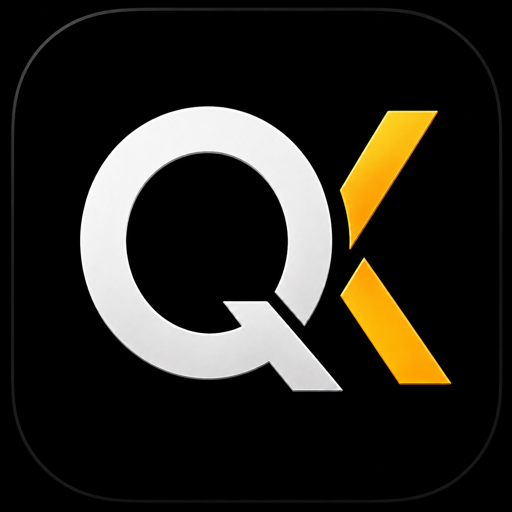
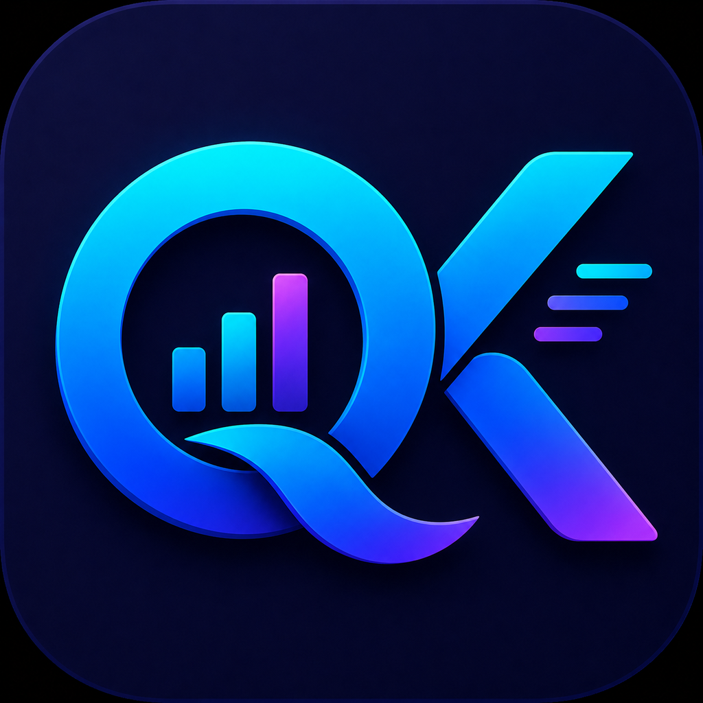

Usage and resets
See the active session and weekly limits with the reset timing needed to plan work.

QuotaKitQuotaKit is a focused personal tool for Codex, Claude, Cursor, and Grok usage windows, costs, and reset countdowns.
macOS 14+ · Universal app · Notarized by Apple
Each provider keeps its own authentication and usage semantics, and the product scope stays fixed.

See the active session and weekly limits with the reset timing needed to plan work.
Keep the local Codex and Claude cost scans and the provider data that is useful day to day.
Send sanitized snapshots to the iPhone companion through the user's private CloudKit database.
Use the same four-provider core from the Mac app and its bundled quotakit command.